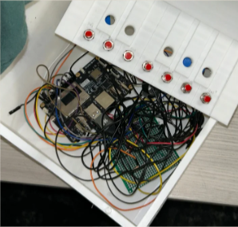
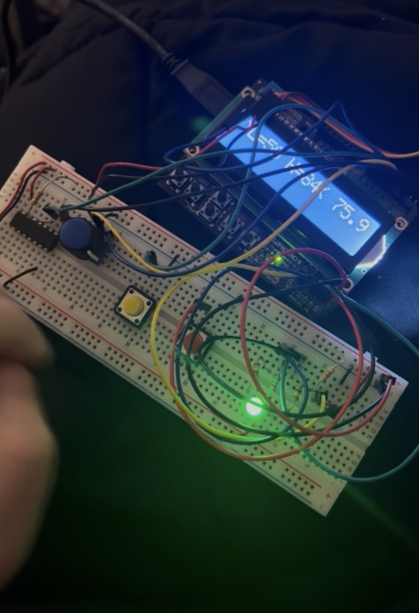
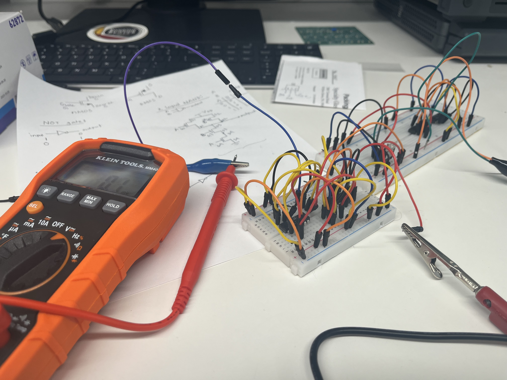

Hardware + Software
HEYwire Alarm Clock
A smart alarm system built with a Raspberry Pi and thermal sensor that detects body heat by only turning off once you physically leave your bed. It features a PreAlarm phase to gradually wake you up, a color changing smart light, and syncs with an Android app over an MQTT server.
Hardware
Accordion Project
Engineered an electronic accordion from with my group scratch, working with real-time pitch detection, chord generation, and motion sensing. Built and debugged on a Qualcomm-sponsored Rubik Pi board, one of the more challenging and rewarding projects I have worked on. I worked a lot on the debugging with the turning the analog data of the voice->Hz->Pitch into 7 different chords on buttons. I also set up the ultrasnoic sensor to measure position and differentiate to velocity to correlate hows fast the user is pressing the bellows to the amplitude of the sound playing.

Embedded Systems
Temperature Monitor
A device that monitors room temperature using a DS18B20 sensor and displays it on an LCD screen with 0.1 degree precision. It features a rotary encoder to set high and low temperature thresholds, an RGB LED that indicates whether the temperature is too hot, too cold, or acceptable, a servo motor that counts down 10 seconds when the temperature goes out of range, and a serial interface to exchange settings with another identical device.

Academic Research
Research
Under PhD mentorship, designed and built CMOS circuits using PMOS and NMOS transistors. Applied concepts in logic gates, Boolean algebra, semiconductors, and MOSFET operation to real circuit implementations.
